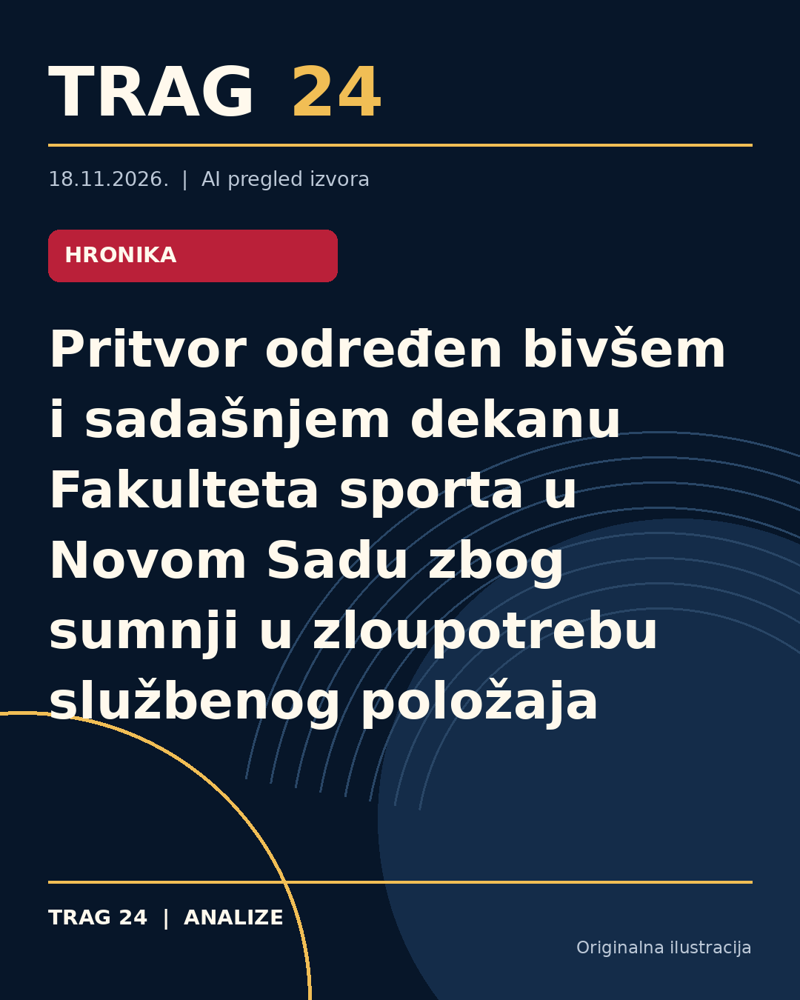

Pritvor određen bivšem i sadašnjem dekanu Fakulteta sporta u Novom Sadu zbog sumnji u zloupotrebu službenog položaja

ŠTA SE DOGODILO
Patriku Dridu, trenutnom dekanu Fakulteta sporta i fizičkog vaspitanja u Novom Sadu, i bivšem dekanu Nebojši Maksimoviću, odredjen je pritvor do 30 dana zbog sumnje da su zloupotrebili službeni položaj. Oni se terete da su oštetili budžet Autonomne pokrajine Vojvodine za oko 19,5 miliona dinara iznajmljivanjem pokrajinskog prostora od strane fakulteta, a da ti prihodi nisu uplaćivani u budžet.
HRONOLOGIJA
Osumnjičeni su uhapšeni u ponedeljak, 16. novembra. Nakon saslušanja u Višem javnom tužilaštvu u Novom Sadu, Posebnom odeljenju za suzbijanje korupcije, sudija za prethodni postupak Višeg suda u Novom Sadu doneo je rešenje o pritvoru do 30 dana zbog opasnosti da bi osumnjičeni mogli ometati postupak uticanjem na svedoke ili da bi mogli ponoviti krivično delo. Protiv tog rešenja je dozvoljena žalba krivičnom vanpretresnom veću Posebnog odeljenja za suzbijanje korupcije.
ŠTA NAVODE IZVORI
Prema podacima Višeg javnog tužilaštva i suda, sumnja je da su Drid i Maksimović preko svojih službenih ovlašćenja nevršenjem službene dužnosti prihode od zakupa faklutetskog prostora evidentirali kao prihode od "organizacije sportskih aktivnosti" kako bi prikrili stvarnu prirodu zakupa, te da su novac koji je bio namenjen budžetu AP Vojvodine koristili za isplatu zaposlenima fakulteta. Izvori navode da je pritvor određen zbog postojanja posebnih okolnosti i mogućeg uticaja na svedoke.
ŠTA JE POTVRĐENO
Potvrđeno je da su Patrik Drid i Nebojša Maksimović osumnjičeni za zloupotrebu službenog položaja, da su uhapšeni i da im je određen pritvor do 30 dana. Takođe je potvrđeno da je predmet istrage raspored iznajmljivanja prostora u vlasništvu pokrajinskog budžeta, kao i da postoje indicije o šteti u iznosu od oko 19,5 miliona dinara usled nepravilnog evidentiranja i nenaplativanja prihoda u Pokrajinski budžet.
ŠTA NIJE POTVRĐENO
Nisu dostupni detalji da su protiv osumnjičenih podignute optužnice, niti postoji potvrda o njihovim eventualnim izjavama ili odbranama. Takođe, nisu potvrđene okolnosti da li su osumnjičeni direktno koristili oštećena sredstva za ličnu korist.
ŠTA OSTАJE OTVORENO: Ostaje nejasno kako će se postupak dalje odvijati nakon žalbi, kao i konačni ishod istrage i eventualnog sudskog procesa. Takođe nije poznato ima li drugih lica umešanih u predmet, niti celokupna dinamika poslovanja fakulteta u ovom periodu.
Izvori
- https://www.kurir.rs/crna-hronika/10165350/patriku-dridu-odredjen-pritvor-zbog-zloupotrebe-polozaja
- https://informer.rs/politika/vesti/1170944/patrik-drid-pritvor-visi-sud-u-novom-sadu
- https://insajder.net/prenosimo/sud-odredio-pritvor-do-30-dana-patriku-dridu-i-bivsem-dekanu-dif-a-u-novom-sadu
Ova analiza je pripremljena uz pomoć veštačke inteligencije na osnovu javno dostupnih izvora. Navodi izvora nisu nužno nezavisno potvrđeni.